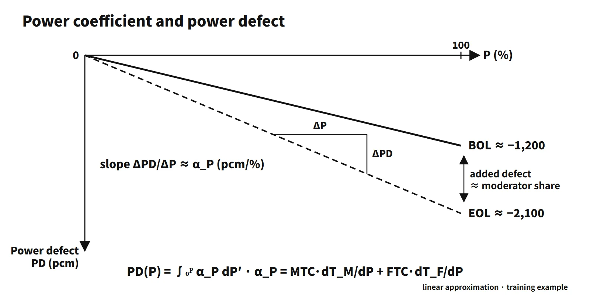

Reactor Physics & Kinetics · C-RX-012
Power Coefficient — Reactivity per 1 % Power and Its Integral, the Power Defect
Reactivity per 1 % power, its integral the power defect, and why it is more negative at end of cycle.
The power coefficient (αP) is the change in core reactivity per 1 % change in reactor power (relative to rated), αP = dρ/dP, in pcm/%power (some references write it as %Δk/k per %power, e.g. −0.012 = −12 pcm/%); because fuel temperature, moderator temperature (density) and voids all change with power, it is a composite coefficient: the individual coefficients weighted by how fast each temperature changes with power.
A one-line exam answer is enough: "the rate of reactivity change with power, equal to the moderator and fuel temperature coefficients weighted by the temperature change per unit power, designed to be negative over the whole power operating range."
Principle and mechanism
Coefficient × temperature change per unit power
For a PWR, ignoring the void and pressure terms:
- αP = MTC·(dTM/dP) + FTC·(dTF/dP)
- MTC, FTC: temperature coefficients in pcm/K (or pcm/°F)
- dTM/dP: change in average moderator temperature per unit power (K/%), set by the variable-Tavg operating program
- dTF/dP: change in average fuel temperature per unit power (K/%), set by the fuel-rod thermal resistance (pellet conductivity and gap conductance)
Because each term is a coefficient times a rate, the power coefficient is not "MTC + FTC". That sum is the isothermal temperature coefficient, ITC = MTC + FTC. This note focuses on tying the two coefficients to a single variable, power.
The derivative is the power coefficient; the integral is the power defect
Integrating the power coefficient from 0 % to P gives the power defect (PD):
- PD(P) = ∫₀ᴾ αP dP′ (in pcm)
The coefficient is the slope; the defect is the accumulated total. Raising power inserts negative reactivity equal to the power defect, which must be offset by withdrawing control rods or diluting boron. Conversely, when power falls and the fuel and moderator cool, the same amount comes back as positive reactivity feedback.
What it means in a plant
Beginning versus end of cycle
Values read from the figures in a US NRC training manual (a Westinghouse-type training example core):
| Item | BOL | EOL |
|---|---|---|
| Total power coefficient (0 → 100 %) | −13.5 → −11.9 pcm/% | −22.0 → −20.8 pcm/% |
| 100 % power defect | about −1,210 pcm | about −2,130 pcm |
| Doppler share | about −1,180 pcm | about −1,030 pcm |
| Moderator share (total − Doppler, estimated by subtraction) | about −30 pcm | about −1,100 pcm |
| Fuel temperature rise (0 → 100 %) | about 1,000 °F | about 800 °F |
![Left: power coefficient versus power, BOL from −13.5 to −11.9 and EOL from −22.0 to −20.8 pcm per %, with the 80 to 100 % area worth about −416 pcm. Right: its integral, the power defect, reaching −1,254 pcm at BOL and −2,110 pcm at EOL, with reference points at about −1,210 and −2,130. Below: bars splitting the 100 % defect into Doppler −1,180 plus moderator about −30 at BOL and Doppler −1,030 plus moderator about −1,100 at EOL, a vessel-head image for compensation by rods and boron, and the formula alpha P = MTC·dTM/dP + FTC·dTF/dP](../../assets/images/concepts/c-rx-012-power-coefficient/fig1-power-coefficient-defect.webp)
Three points matter:
- EOL is more negative. The source attributes this "primarily to the change in the moderator temperature coefficient": with boron diluted, the MTC grows to around −30 to −45 pcm/°F.
- The Doppler share actually shrinks a little at EOL. Pellet swelling and cladding creep close the gap, so the fuel temperature rise at the same power is smaller (dTF/dP decreases).
- At BOL the power defect is almost all Doppler; at EOL Doppler and moderator share it roughly equally.
Integrating the digitized power-coefficient curve directly gives a 100 % defect of −1,254 pcm at BOL and −2,110 pcm at EOL, within a few percent of the source's power-defect figure; the EOL defect is about 1.7 times the BOL value. The curve shape also shows that the coefficient is slightly less negative at higher power, because Doppler broadening saturates at high temperature and the FTC magnitude falls. The power defect is therefore nearly a straight line, but strictly it is slightly convex upward.
Self-regulation and load changes
A negative power coefficient is what makes the reactor hold its own power (self-regulation). An example in the same manual shows this well. With an MTC of −20 pcm/°F and a Doppler power coefficient of −10 pcm/%, reducing turbine load from 60 % to 50 % without moving control rods gives:
- Less heat removed from the primary side, so Tavg rises → negative reactivity
- Power falls, so fuel temperature drops → positive reactivity
- A new equilibrium where a Tavg rise of 5 °F (−100 pcm) balances a 10 % power reduction (+100 pcm)
The equilibrium condition is αM·ΔTavg + αD,P·ΔP = 0. In real operation, the variable-Tavg program requires Tavg to rise with power, so the power defect inserted when power is raised is compensated with rods or boron. That adjustment is made to hold Tavg on its programmed value, not to make the reactor follow power.
In load-follow operation, reactivity equal to the power defect has to be added and removed with every power swing. At EOL the defect is larger while the boron concentration is low, so offsetting the same reactivity with boron takes more dilution water and more time. Reliance on control rods grows, and so does the burden of managing the axial power distribution and xenon oscillations.
Stability and safety analysis
- A positive power coefficient is unstable: a power perturbation increases reactivity, which increases power further. At low power the Chernobyl RBMK had a positive power coefficient because of its large positive void coefficient (INSAG-7).
- Too negative is also a burden: the positive reactivity returned on a power reduction or trip is large, and recriticality margins are worse in cooldown events such as a main steam line break.
- Safety analysis therefore uses both ends: the least negative (BOC) value for heat-up and reactivity-insertion events, the most negative (EOC) value for cooldown events.
- So that the core stays subcritical against the positive reactivity released as power and temperature fall after shutdown, the control-bank insertion limit (minimum rod height) rises with power.
Three calculation questions from past exams
- 2020 exam, session 3, Q1: FTC = ITC − MTC = −12 − (−10) = −2 pcm/K. αP = (−10)(2) + (−2)(10) = −40 pcm/%power. This is a training value larger than real PWR values (−12 to −22 pcm/%).
- 2026 exam, session 3, Q2: FTC = −6 − (−5) = −1 pcm/K. αP = (−5)(1) + (−1)(5) = −10 pcm/%power, with moderator and fuel contributing −5 each.
- 2021 exam, session 4, Q3: from 0 → 100 %, fuel 300 → 800 °C and moderator 300 → 320 °C.
- (a) Δρ = (−2.0)(500) + (−5.0)(20) = −1,000 − 100 = −1,100 pcm
- (b) αP = −1,100/100 = −11 pcm/%power (average over 0–100 %)
- (c) With boron fixed, +1,100 pcm is needed → 1,100/10 = 110 steps of rod withdrawal
- (d) With rods fixed, 1,100/10 = 110 ppm of dilution
- The Doppler share is 91 %, similar to the BOC make-up.
Regulatory basis
- 10 CFR 50 Appendix A, GDC 11 (Reactor inherent protection): in the power operating range, the net effect of the prompt inherent nuclear feedback characteristics shall tend to compensate for a rapid increase in reactivity. A negative power coefficient is the operating indicator of this requirement.
- Korean technical standard rule (Rules on the Technical Standards for Reactor Facilities), Article 18 (Inherent protection of the reactor): same intent as GDC 11.
- NUREG-0800 SRP 4.3 (Nuclear design): reviews calculation methods and uncertainties for reactivity coefficients, including the power coefficient, and the coefficient ranges used in transient analysis.
- Technical specifications (STS NUREG-1431 Rev. 5): there is no LCO on the power coefficient itself. It is managed indirectly through the MTC (LCO 3.1.3), shutdown margin (3.1.1) and control-bank insertion limits (3.1.6); the numbers are in each unit's COLR.
- IAEA: SSR-2/1 (Rev. 1, 2016) core design requirements; SSG-52 (2019) core design guide.
- Then and now: the concept is unchanged since the 76th exam (2005) and the 2011 short-answer question. The current STS is Rev. 5 (2021).
Easily confused pairs
| Power coefficient | Power defect | Isothermal temperature coefficient (ITC) | Temperature defect | |
|---|---|---|---|---|
| Definition | dρ/dP | ∫αP dP | MTC + FTC | ∫ITC dT |
| Unit | pcm/% | pcm | pcm/K | pcm |
| Variable | Power | Power interval | Uniform temperature | Temperature interval (cold → hot zero power) |
| Use | Self-regulation, transient analysis | Compensation, shutdown margin | HZP measurement | Cooldown shutdown margin |
The power coefficient and power defect are a derivative and its integral, and so are the ITC and the temperature defect. In calculation questions, simply checking the units catches most mix-ups.
Key points at a glance
- Definition: αP = dρ/dP, reactivity change per 1 % power (pcm/%power).
- Make-up: αP = MTC·dTM/dP + FTC·dTF/dP (PWR, voids ignored).
- Power defect: PD = ∫₀ᴾ αP dP, the reactivity accumulated from 0 → 100 % (pcm).
- Compensation: power ↑ → rod withdrawal or boron dilution; power ↓ → +ρ feedback as temperatures fall → control-bank insertion limits preserve the shutdown margin.
- Cycle dependence: more negative at EOC (mainly MTC); the Doppler share falls slightly as the gap closes.
- Representative values (training example): BOL about −12 pcm/%, defect about −1,200 pcm; EOL about −21 pcm/%, about −2,100 pcm.
- Self-regulation: a negative power coefficient lets Tavg and power settle at a new equilibrium after a load change.
- Safety analysis: BOC (least negative) → heat-up and reactivity events; EOC (most negative) → cooldown events.
- Basis: GDC 11, Korean technical standard rule Article 18 (inherent protection), SRP 4.3.

This is a model answer, not an official solution. It reflects the criteria current as of 2026.
Exam relevance
The power coefficient has appeared five times in the Korean Professional Engineer (Nuclear Power) exam: as short-answer items on the power defect (76th exam, 2005, session 1, Q4) and on the power coefficient and power defect (2011 exam, session 1, Q9), and as calculation questions in the 2020 exam (session 3, Q1), the 2021 exam (session 4, Q3) and the 2026 exam (session 3, Q2). The calculations follow one pattern: derive the FTC from the ITC and MTC (FTC = ITC − MTC), weight each coefficient by its temperature change per unit power, and, in the longer version, convert the resulting power defect into rod steps or ppm of boron. Watch the units: a sum of coefficients in pcm/K is the ITC, not the power coefficient, and a defect in pcm is not a coefficient in pcm/%.